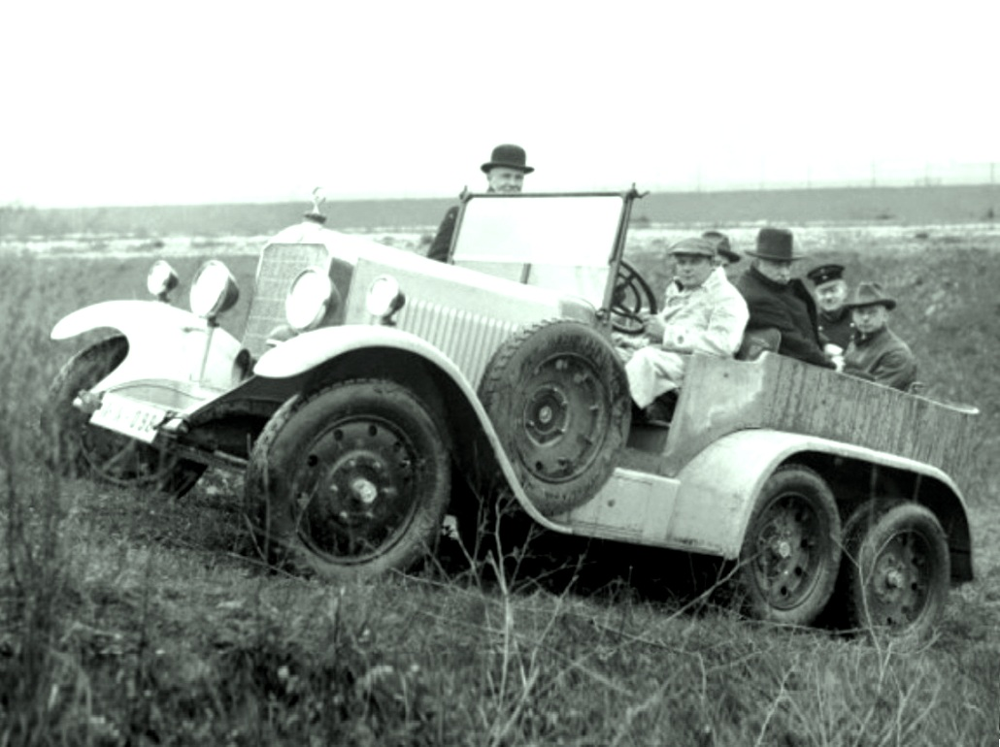
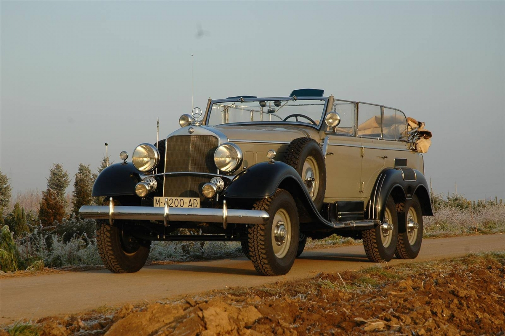
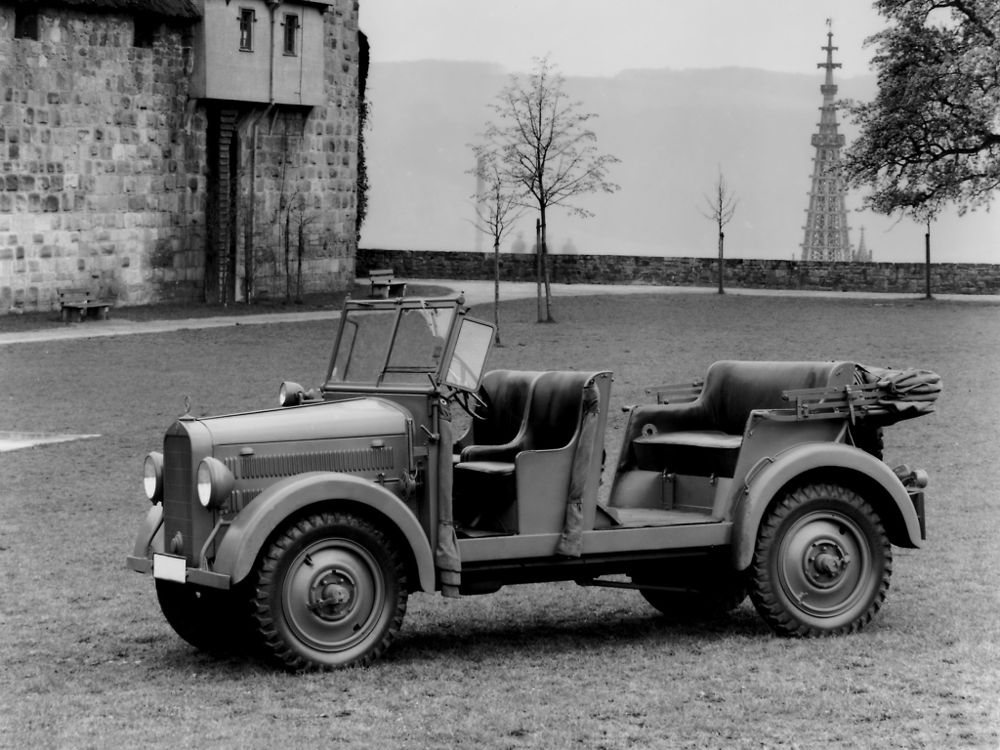
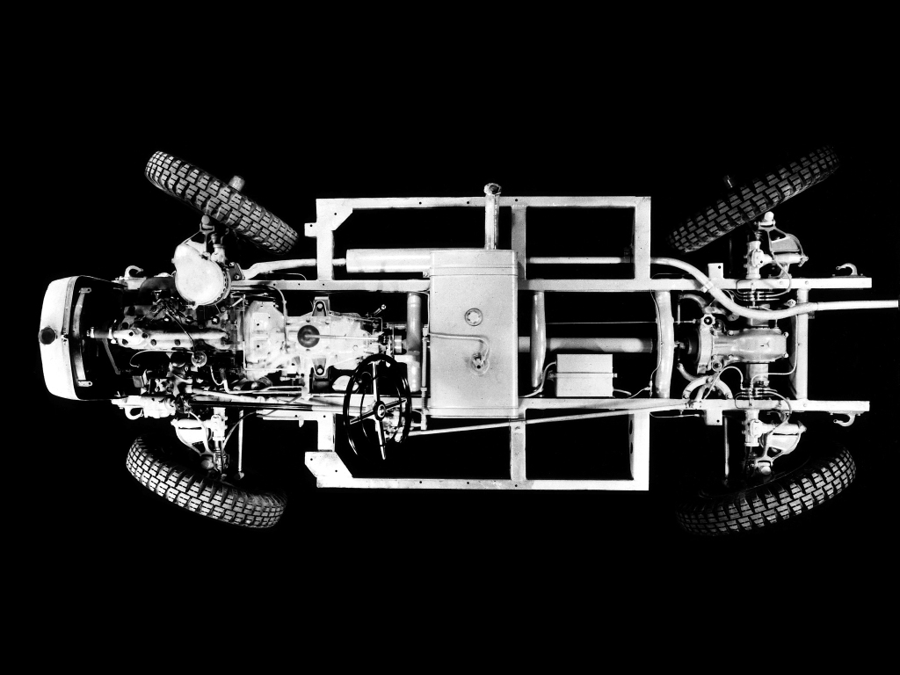
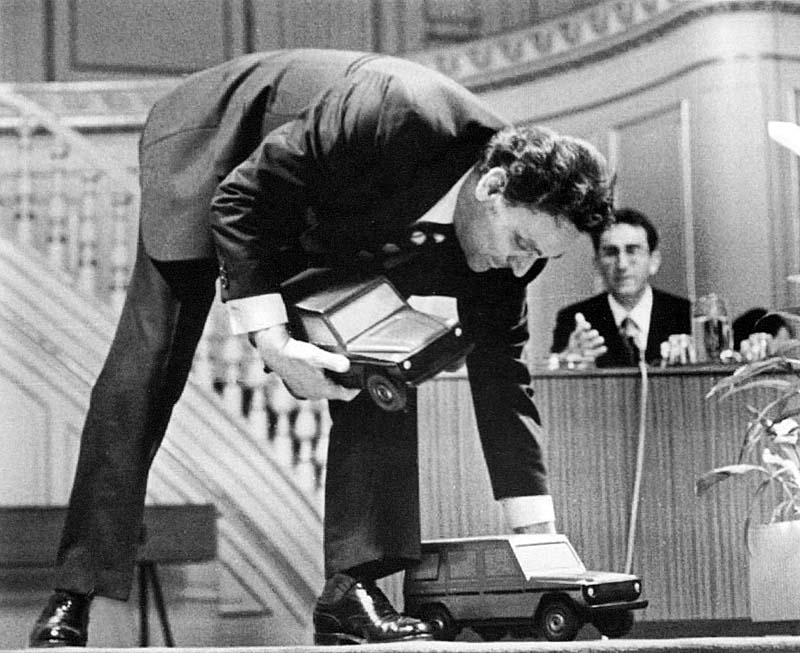
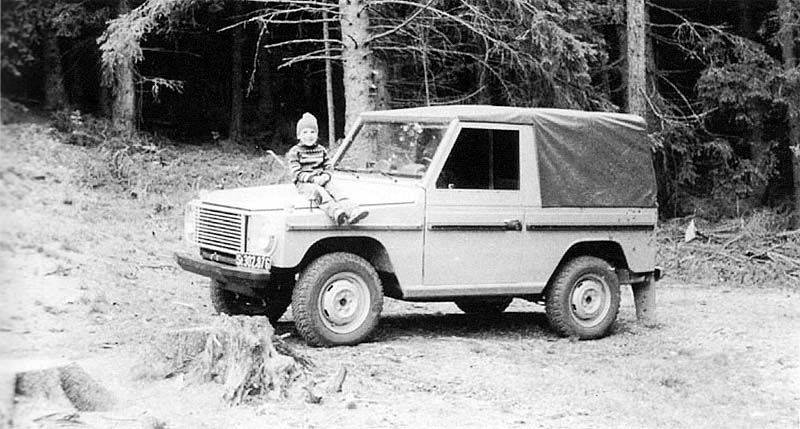
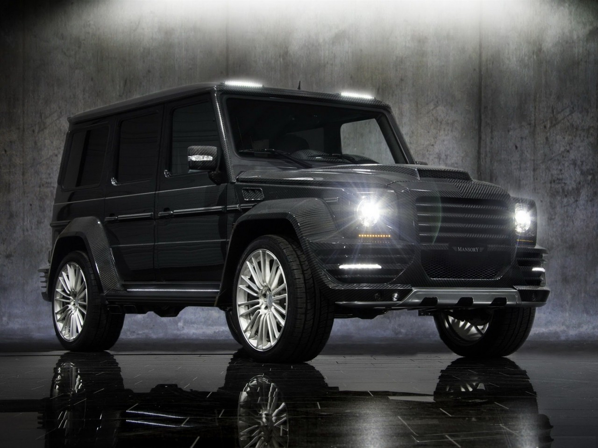

Mercedes Gelandewagen, задуманный как утилитарный внедорожник, перевозчик солдат, за 36 лет своей славной истории превратился в настоящий Rolls-Royce среди вездеходов. А его простой функциональный дизайн, который когда-то обвиняли в некой рабоче-крестьянской примитивности, теперь называют не иначе как классическим.Датой рождения автомобиля официально провозглашено 10 февраля 1979 года. В этот день впервые был представлен публике новый автомобиль и запущен конвейер производства. Но 1979 год — это лишь условная дата, символ. История Mercedes-Benz G-class началась значительно раньше… «Гелендваген» — живая легенда мира внедорожников. Этот автомобиль есть и в гараже Папы римского и в автопарке президента России. Но, мало кто знает, что история Gelandewagen (в переводе с немецкого «автомобиль для бездорожья»), началась еще в 1926 году, когда был создан экспериментальный Mercedes-Benz G1, оснащенный вторым задним мостом, призванным улучшить проходимость автомобиля.
Прототип G1 и последующие за ним модификации G2 и G3 в серию не пошли: производство внедорожников Mercedes-Benz началось лишь в 1934 году, когда была организована мелкосерийная сборка модели G4. Этот шестиметровый трехосный автомобиль, оснащавшийся двигателями от спортивных моделей Mercedes-Benz 500К и 540К (но без компрессора), использовался верхушкой Третьего рейха.
За три года было собрано всего 57 экземпляров Mercedes-Benz G4, после чего компания запустила в серию новый вариант внедорожника — армейскую модель G5.
Этот внешне непримечательный автомобиль с малогабаритным кузовом и слабеньким мотором имел одну уникальную особенность: систему поворота колес задней оси. То есть G5 был не только полноприводным, но и полноуправляемым, что обеспечивало ему фантастическую маневренность.
Последняя модель выпускалась с 1937 по 1941 год и разошлась в количестве 378 экземпляров, однако в известности она значительно уступала гиганту Mercedes-Benz G4.
Новейшая история Gelandewagen берет начало в 1972 году, когда австрийская компания Steyr-Daimler-Puch AG в рамках совместного проекта с Mercedes-Benz, приступила к работе над внедорожником под кодовым названием Н2. Согласно техзаданию, спущенному отделом маркетинга Mercedes-Benz в конструкторское бюро Steyr-Daimler-Puch AG, это должен был быть универсальный автомобиль, одинаково пригодный как для военных нужд, так и для использования частными владельцами.
Австрийцы сработали оперативно: полноразмерный макет внедорожника, изготовленный по старинке из дерева, был готов к весне 1973 года, а через год уже начались ходовые испытания прототипа будущего Gelandewagen.
Впрочем, неизвестно, как сложилась бы дальнейшая судьба этой модели, если бы ровно 40 лет тому назад, в 1975 году, не произошло знаковое событие, придавшее новый толчок работе над проектом.
Именно тогда Daimler-Benz договорился со Steyr-Daimler-Puch (Австрия) о совместном производстве внедорожников. Выбор места и партнера был не случаен. Во-первых, изначально планировали выпускать машину сравнительно мелкой серией – около 10 тысяч в год. Загружать производственные площади в Германии ради такого количества не было никакого смысла. Во-вторых, Steyr к тому моменту мог похвастаться большим опытом проектирования и производства полноприводной техники. С его конвейеров уже сходили машины вагонной компоновки – Pinzgauer и Haflinger, созданные коллективом инженеров под руководством Эриха Ледвинки – сына легендарного инженера Ганса Ледвинки, долгое время работавшего на Tatra.
Ничего удивительного, что проектирование будущего совместного внедорожника было поручено именно Ледвинке. Первый прототип H2 (т. е. Haflinger 2) с бензиновым мотором и коробкой передач от легкового Mercedes-Benz был готов в рекордные сроки. Поскольку машину проектировали прежде всего как армейскую, кузов был подчеркнуто упрощенной формы, с плоскими панелями и откидным лобовым стеклом для открытой модели. Отличить опытный H2 от будущего серийного Geländewagen можно было лишь по упрощенной передней части. Знаменитая радиаторная решетка с утопленными круглыми фарами появится только в 1976 году на прототипе Expedition.
Сама конструкция H2, особенно если сравнивать с другими творениями Эриха Лендвинки, выглядела весьма консервативно. Обычная лестничная рама, рычажно-пружинная зависимая подвеска всех колес, дисковые тормоза спереди, барабанные сзади. Естественно, с усилителем. При этом будущая звезда офф-роуда могла похвастаться постоянным полным приводом с блокировками центрального и заднего дифференциалов. И никаких хребтовых рам, как на внедорожниках Steyr, управляемых задних колес и полностью независимой подвески, как на довоенном Mercedes-Benz G5. Уже в 1974 году прототипы принялись наматывать километры по самым суровым местам: на горном полигоне Steyr-Daimler-Puch – трассе Schöckl недалеко от Граца, в угольном карьере, в Скандинавии за Полярным кругом, в песчаных и каменистых пустынях Северной Африки, на Аравийском полуострове, а также на бездорожье Аргентины.
Однако с запуском в серию никто не торопился.
Серьезным стимулом для проекта стал крупный заказ на 20 тысяч автомобилей для армии Ирана.
Уже в феврале 1977 года Daimler-Benz AG совместно со Steyr-Daimler-Puch AG создают совместное предприятие
GFG (Geländefahrzeug-Gesellschaft). Производство было решено наладить на заводе в Граце, принадлежащем
Steyr-Daimler-Puch.
По условиям договора в ФРГ делали двигатель, трансмиссию, мосты, рулевое управление и крупные детали кузова.
За штампованные детали меньшего размера, а также раздаточную коробку отвечали австрийцы. Любопытными были
условия раздела рынков сбыта. Большая часть выпущенных вездеходов должна была носить звезду Mercedes-Benz на
радиаторной решетке, и лишь 10% от общего выпуска продавалось под маркой Puch. По условиям соглашения их
реализация
допускалась только в Австрии, Швейцарии, а также в странах Восточной Европы.
О гелендвагене часто говорят, что он был создан по заказу Бундесвера — отсюда его солидность,
выносливость и безотказность. Однако правда состояла в том, что рынком сбыта первоначально являлся
гражданский сектор, а не военный. В семидесятых годах Бундесвер, правда, планировал закупку новых
полноприводных
автомобилей, но заключил договорённость с правительствами Франции и Италии, касающуюся общего развития под
рабочим
названием «Европейский Джип». Согласно спецификациям, транспортное средство должно было быть плавающим,
а Geländewagen не оправдывал ожиданий немецких военных. Однако этот проект закрылся в 1976 году и Бундесвер
объявил
тендер на поставку 8800 единиц вседорожников, упустив требование плавучести. Daimler-Benz выставил на
конкурс
прототип своего вездехода, но по некоторым обстоятельствам армия выбрала Volkswagen VW 183, более известный
как
Iltis.
Выбор Бундесвера был обусловлен, в первую очередь, сроками поставки — Volkswagen объявил, что
первые автомобили передаст до конца 1978 года, — а также ценой. Daimler-Benz потерпел поражение.
В 1976 году Geländewagen был ещё прототипом, в который предстояло внести много поправок и
усовершенствований.
Кроме того, выбор был обусловлен и политическими мотивами — в предыдущем тендере Бундесвер уже заключил
договор
о поставке Unimog, и отказ в то время государственному Volkswagen означал бы предоставление полного
преимущества
Daimler-Benz.
Не подлежит сомнению факт, что заинтересованность автомобилем со стороны армии разбудило амбиции менеджеров
Daimler. Анализ гражданского рынка был не слишком оптимистичен и окупаемость продукции мог гарантировать
лишь
крупный заказ какой-либо страны для своей армии. Когда в 1976 году Geländewagen участвовал в тендере
Бундесвера,
решение о его будущем было уже решено — аналитики констатировали, что продукция будет рентабельной.
Уже в 1978 году был готов предсерийный образец с мягким быстросъемным верхом, который теперь назывался
Geländewagen
(т. е. автомобиль для пересеченной местности). Однако новое иранское правительство, пришедшее к власти в
1979 году
после знаменитой исламской революции, столь важный заказ аннулировало. Германская армия, на которую партнеры
возлагали
большие надежды, к новой машине интереса не проявила. К счастью, положение несколько выправилось за счет
пограничников ФРГ, а также армий Аргентины и Норвегии.
Что же позволило Geländewagen преодолеть все встретившиеся трудности? В значительной степени можно сказать,
что случай.
В семидесятых годах одним из основных заказчиков Daimler была иранская королевская семья. Амбициозный шах
Reza Pahlawi хотел сделать из своей страны третью после США и СССР военную державу. Обладая громадными
доходами от экспорта нефти, он мог себе это позволить. Одной из идей, сопутствующих осуществлению мечты,
была идея покупки 20 000 полноприводных автомобилей для иранской армии. В 1975 году такой заказ получил
именно
Mercedes.
Это было как ветер в паруса после полного штиля. В феврале 1977 года Daimler-Benz AG совместно со
Steyr-Daimler-Puch
образовали союз с названием GFG (Geländefahrzeug-Gesellschaft), в котором обе фирмы внесли по половине
взносов. Новая
компания была призвана к разработке, внедрению и дальнейшему улучшению конструкции Geländewagen, а также
продвижению
продаж модели. Двигатель, коробка передач, мосты должен был производить Daimler, а раздаточную коробку
Steyr-Daimler-Puch. Всё остальное могли поставлять другие фирмы. Продукцию планировали производить на
предприятии
в Граце, принадлежащем на 100% Steyr-Daimler-Puch.
Одним из условий между партнёрами было разделение рынка. На отечественном рынке Steyr в Австрии, Швейцарии,
а также
странах тогдашнего «восточного блока», в том числе Польше, Geländewagen продавали под маркой PUCH. В
остальных странах
автомобиль продавали под маркой Mercedes-Benz. Соответственно в первом случае на решётке радиатора
красовалась эмблема
«PUCH», а на остальных — «Mercedes».
11 марта 1977 канцлер Австрии Bruno Kreisky лично заложил камни под построение нового павильона предприятий
Steyr-Daimler-Puch AG в Graz-Thondorf, площадь которого превышала 40 000 квадратных метров. Союз GFG взял
полный
контроль над проектом в конце 1978 года — но несколько месяцев спустя шах Reza Pahlawi ввёл военное
положение в
Иране. В середине января исламская революция вынудила бежать его из страны. Стало ясно, что заказ на 20 000
автомобилей пропал вместе с ним, но маховик производства уже было не остановить.
Хотя у менеджеров Mercedes-Benz и не было слишком много поводов к радости, премьера Geländewagen увенчалась
успехом.
Журналисты высказывались о новом автомобиле если не восторженно, то позитивно.
Конвейер Mercedes-Benz G-class заработал в павильоне №12 завода Граца 1 февраля 1979 года, а первые
презентации автомобиля
с кузовом W460 публике последовали с 5 по 10 февраля 1979 года. Также для прессы близ Марселя в южной части
Франции в Le
Castellet были продемонстрированы четыре модели в двух вариантах — короткобазном и длиннобазном, а также
пять вариантов
кузова. Две из них — 230G и 280G были оснащены бензиновыми двигателями, а две других — 240GD и 300GD —
дизельными. Все
автомобили были оборудованы четырёхступенчатой механической коробкой переключения передач и подключаемым
передним приводом.
В зависимости от предпочтений, покупатель мог выбрать накрытый брезентом короткобазный кабриолет, либо
короткобазную или
длиннобазную закрытую версии. Для военных была предоставлена возможность заказа длиннобазной модели как
трёхдверного, так
и пятидверного вариантов, покрытых брезентом. Палитра цветов была ограничена пятью оттенками: белый кремовый
(Crèmeweiß),
жёлтая пшеница (Weizengelb), бежевый (Coloradobeige), красный (Karminrot), а также зелёный
(Agavengrün).
Но больше всего выделяло Mercedes G-class среди остальных моделей — подключение переднего привода
без необходимости остановки. То же самое касалось системы блокировки дифференциалов. На премьере было
объявлено,
что в ближайшем будущем G-class будет доступен с четырёхступенчатой автоматической коробкой передач. В
дальнейшем
время покажет, что начало серийного выпуска даст лишь небольшую передышку менеджерам и инженерам,
участвующим в проекте
«Geländewagen».
В течение непродолжительного времени после дебюта Mercedes G-class рынок выставил автомобилю собственную
оценку.
А она уже была не так полна энтузиазма, как первые отзывы от приглашённых во Францию журналистов.
Никто не оспаривал уникальных вседорожных свойств Geländewagen, комфортно себя чувствующего как на трассе,
так и на пересечённой местности. Рано было оценивать выносливость конструкции, но применяемые решения в виде
стальной рамы с закреплённым на ней кузовом, мостов и раздаточной коробки, казалось бы, гарантировали
безотказность.
Кроме того, конструкторы автомобиля раскрыли, что на протяжении пяти лет прототипы Mercedes G-class
подвергались
убийственным испытаниям, проходившим на полигоне Steyr-Daimler-Puch, трассе Schöckl недалеко от Граца, в
ущелье
карьера между Kolonią и Aachen, в Скандинавии за Полярным Кругом, песчаных и каменистых пустынях Северной
Африки,
на Аравийском полуострове, а также на бездорожье Аргентины.
Тревожные звонки раздавались по поводу качества отдельного оборудования.
Руководство проекта было в курсе ряда систематически проявляющихся неполадок, но
проблема лежала преимущественно на стороне поставщиков деталей, не способных поставить
заказанные части в соответствии со спецификацией качества Mercedes-Benz.
Рынок вывел основные принципы позиционирования Mercedes-Benz G-Class. Geländewagen не должен
был быть простым надёжным транспортным средством и удобным полноприводным автомобилем. Задание,
которое было поручено конструкторам, было усложнено: необходимо было построить автомобиль с возможностями,
не встречавшимися прежде. С одной стороны он должен был характеризоваться безотказностью и выносливостью
в разных географических условиях — оправдать ожидания лесных служб, отраслей земледелия, энергетики,
военных;
с другой — должен быть удобным, хорошо оснащённым и главное — безопасным транспортным средством. Самое
интересное
в том, что такой автомобиль удалось построить с тем отличием, что удовлетворить сразу две противоположные
группы
покупателей было сложно.
В 1979 году производственная мощность Граца составляла 10 000 вседорожных автомобилей в год, при этом в
первые
три года с завода должны были выехать 1 000, 5 500 и 6 000 автомобилей соответственно. Эти цифры оказались
заниженными,
потому что в первом году была выпущена 2 801 штука, а в последующих соответственно 7 533 и 6 950 штук.
Перевыполнение
производственных планов обеспечили заказы немецких служб — пограничных войск и местной полиции. Проигранный
бундесверовский
тендер был вполне компенсирован. Интересной подробностью является то, что несколько проданных в Аргентину
экземпляров
вернулось в Европу в виде английских трофеев после окончания Фолклендской войны в 1982 году.
Вскоре была обнаружена серьёзная стратегическая ошибка. Вместо короткобазной модели с открытым кузовом,
на которую ставило руководство Daimler, наибольшей популярностью пользовался длиннобазный закрытый W460.
Чтобы справиться с потоком заказов, потребовалось быстрое изменение приоритетов — корректировка
бизнес-планов
и заказов запасных частей у поставщиков. Досадными последствиями ошибки стали десятки уже сделанных, но не
проданных кабриолетов.
Ошибки планирования, возникшие из-за невыявленных потребностей и ожиданий рынка, касались также
внутренностей
транспортного средства, дополнительного оборудования, а также двигателя. В последующем станет ясно, что
ошибка
тянется от специалистов, которым параметры удобств водителя и пассажиров показались более важными, нежели
мощность
двигателя. Из числа четырёх типов двигателей, представленных на рынок Mercedes-Benz G-class, большим тиражом
выпускались
слабые девяностосильные безиновые двигатели объёмом 2,3 л., а также дизельные модели объёмом 2,4 л.
Покупателиже искали
«Мерседесы» с бензиновым двигателем 2,8 л. (150 л.с.), а также трёхлитровые дизельные модели мощностью 88
л.с.
В рекламных буклетах 1979 года в названии модели с двигателем 2,8 л. указывалась буква «E», указывающая на
электронный впрыск. Правда, такие до конца 1981 г. почти не поставлялись из-за нехватки запасных частей.
Вообще,
«Мерседес» в то время страдал от недостатка двигателей M110. Фактически их распространение началось лишь со
второй
половины 80-х годов, когда модель 280 GE поступила в массовую продажу.
Внесение несущественных изменений во внешний вид и оборудование автомобиля стало регулярной особенностью,
которая сопровождает G-class и до наших дней. Если в 1979 году военные сетовали на слишком низкую мощность
двигателей,
то частные клиенты жаловались на слишком спартанский внутренний вид, нехватку АКПП, кондиционера, а также
небольшую гамму
расцветок кузова. Именно эти замечания клиентов повлекли, после короткой передышки, возникшей из-за запуска
в серию новой
продукции, продолжение работы конструкторов. Первые изменения в G-class произошли во второй половине 1981
года. Теперь можно
было заказать автомобиль с АКПП, механической лебёдкой, увеличенным на 16 литров топливным баком. В
длиннобазной версии
предлагались боковые скамьи в багажник. Весной 1982 года Geländewagen получил руль от модели W123, а
бензиновые версии G230
и G280 дождались установки электронного впрыска, что повлекло за собой как снятие ограничений на продажи 280
GE, так и
начало производства модели 230 GE. Двигатель M102, использовавшийся в моделях E 230 в серии W123 и W124
заменил карбюраторный
двигатель M115, устанавливаемый на модели 230 G с 1979 года. Однако производство последнего окончено не
было; он был изъят
из предложений для Германии, Австрии и Швейцарии, однако для остальных стран поставлялся до середины 1986
года.
В ответ на пожелания потенциальных покупателей в 1983 году были произведены новые улучшения G-класса. Прежде
всего, это
коснулось расширения гаммы цветов — теперь к выбору предлагалось 4 дополнительных цвета «металлик». Кроме
того, механическая
КПП перешла в разряд опций. Осенью 1983 года были добавлены новая подсветка переключателей, а клавиши,
включающие вентиляторы,
заменены поворотной ручкой. Третий фейс-лифтинг произошёл в сентябре 1985 года.
Стандартом стала установка механических блокировок дифференциалов на обе оси и усиленный передний бампер,
оборудованный системой для буксировки автомобиля. Внутри появилась новая обивка сидений, заднего дивана,
потолка и дверей. По-новому расположились указатели на приборной панели. В качестве опции появился
центральный замок,
а также резиновые расширители, скрывающие установку при необходимости нестандартных шин.
В сентябре 1987 года модель 240 GD была заменена на 250 GD с механической коробкой передач, а остальные
модели
были подвергнуты уже четвёртому по счёту фейс-лифтингу. Наиболее существенным изменением стала установка
стального бензобака,
ёмкость которого была увеличена с 70 до 81,5 литров. Теперь можно было заказать G-class с электрическими
стеклоподъёмниками и
даже выдвижной антенной.
Изначально бизнес-план проекта «Geländewagen» предполагал, что автомобиль будет производиться в течение
10-ти лет.
В июле 1986 года был построен 50-титысячный автомобиль, а в следующем году встал вопрос, что делать дальше.
В течение восьми
лет, с одной стороны, конструкция автомобиля была доработана, с другой — было очевидно, что необходимы
дальнейшие
усовершенствования и инвестиции. Если десятью годами ранее идея автомобиля, на равных востребованного
военными и семьями
с детьми, имела хоть какое-нибудь обоснование, то теперь она казалась напрочь лишённой смысла. Люди,
использующие автомобиль
ежедневно, нуждались в более комфортных сиденьях, кондиционировании салона, более солидной панели приборов и
стереосистеме.
Быстро растущий сегмент гражданских покупателей ждал значительных изменений в комфорте, который уже был
доступен в других
легковых автомобилях.
В этих условиях последовало новое решение о модернизации G-класса, а именно о создании новой модели,
ориентированной исключительно на гражданских лиц. Линия с индексом W463 была призвана предложить комфорт
наравне с другими легковыми моделями, используя уже готовые решения. Как и в случае с W460, проект W463 был
покрыт
тайной. На этот раз работы были поручены отделу легковых автомобилей Штутгарта.
Новый G-class был представлен во время выставки IAA во Франкфурте в сентябре 1989 года. Автомобиль произвёл
фурор.
Снаружи от отличался только некоторыми деталями — пластиковой решёткой радиатора, боковыми зеркалами, новым
передним
бампером со встроенными противотуманными фарами, задним бампером с ПТФ, увеличенными задними фарами,
перемещённой на
левую сторону выхлопной трубой и размещённым справа топливным баком. Весьма революционные изменения
произошли с интерьером.
Это был полностью другой автомобиль — перепроектированная панель приборов и центральная консоль,
кондиционер, кожаный салон,
элегантные сиденья, аудиосистема и наконец, электрическая крыша. Существенно расширен диапазон
дополнительных опций. Новая
модель была также оснащена подушкой безопасности и ABS, являющимся стандартом для легковых
автомобилей.
При проектировании оказалось, что для корректной работы ABS необходимо было изменение типа привода — теперь
W463
характеризуют постоянный привод на четыре колеса с блокировкой центрального межосевого дифференциала.
Конструктивные
изменения коснулись также рамы и мостов. Подобно серии W460, G-class серии W463 был оснащён блокировками
дифференциалов
с той разницей, что включались они теперь кнопкой на центральной консоли.
В момент начала продаж W463 заинтересованный покупатель имел выбор из четырёх моделей — двух бензиновых: 230
GE (126 л.с.)
и 300 GE (177 л.с.) и двух дизельных : 250 GD(94 л.с.) и 300 GD (113 л.с.). Все они были оборудованы
четырёхступенчатой АКПП,
хотя опционально можно было заказать и ручную коробку переключения передач.
Уже в первые месяцы продаж Mercedes G-class использовал решения, сохранившиеся до наших дней. Желание
менеджеров Daimler
угодить сразу двум разным в ожиданиях и потребностях группам клиентов вылилось в несколько лет работ, но в
конце концов
нашло счастливый финал.
Следствием яркой рекламной кампании новой серии W463 явился упадок продаж W460. Перед премьерой W463 в
моделях W460 было
произведено ещё несколько изменений. Это пластиковый бак объёмом 96 литров, заменивший предыдущий
металлический, а также
на 8 лошадиных сил более мощный двигатель 300 GD. По случаю празднования десятилетия G-class была выпущена
ограниченная
партия модели 230 GE «Classic» в 300 штук, выделявшаяся тёмно-синим цветом «металлик» и рядом хромированных
деталей. Однако
было ясно, что после ввода в серию W463 будущее модели W460 изменится. Так и случилось.
В 1991 году была объявлена модернизация старой линейки G-class с индексом W460 и она была замещена на W461.
Когда
в следующем году был показан преемник, оказалось, что «модернизация» заключается в значительной степени в
лишении
автомобиля всех новшеств, которыми была наделена серия W460 — в расчёте на спрос со стороны гражданских лиц.
Сиденья
оказались прорезиненными, палитра доступных оттенков была сокращена, внутреннее убранство получило
аскетичный вид в
противовес комфорту и эстетике.
С этой минуты Mercedes G-class начал развивать серии в разных направлениях, учитывая потребности целевых
групп покупателей.
Модели серии W461 стали типичными «рабочими лошадками», востребованными различными государственными службами
и вооружёнными
силами, тогда как серия W463 стала эволюционировать в направлении класса полноприводных автомобилей
«люкс».
Построенный в неполные три года Mercedes W463 не был свободен от проблем с качеством деталей, получаемых от
поставщиков.
Когда в апреле 1990 года — через полгода после премьеры — новый автомобиль попал в конечном итоге в
автосалоны и получил
многотысячные заказы— покупатели были вынуждены долгие месяцы ждать, в то время как сотни транспортных
средств стояли на
заводской площадке в Граце, ожидая замены дефектных компонентов.
Несмотря на временные трудности, касающиеся старта продаж моделей W463, начало 90-х годов вошло в историю
продаж G-класса.
В 1990 году были произведены 12 103 единицы G-class, а в следующем — 11 540 единиц. Эти результаты были
обусловлены не только
огромной заинтересованностью клиентов моделями W463, но и большими параллельными поставками для войск. В
конце 80-х годов
были подписаны серьёзные контракты в том числе с Бундесвером, заказавшим 12 000 автомобилей разных типов, а
также швейцарской
армией, закупившей 4 000 единиц автомобилей. Кроме того, в Граце производились комплекты CKD,
предназначенные для выпуска в
греческом предприятии ELBO в Салониках так называемой серии W462 для потребностей греческой армии и полиции.
Неудивительно, что на выпуск первых 50 000 единиц Mercedes-Benz G-class потребовалось 8 лет, тогда как
построение вторых
50 000 с 1987 по 1992 года — уже только 5. Зато выпуск третьих символических 50 000 занял уже почти 10
лет.
Подобно W460 в восьмидесятых годах, серия W463 требовала постоянной модернизации в девяностых. Не проходило
и года,
как то один, то другой компонент заменяли на более современный и предлагали различные дополнительные опции.
Премьеры
новых моделей характеризовались демонстрацией всё более совершенных технологий и более мощных
двигателей.
Уже в мае 1992 года был выпущен Mercedes-Benz 350 GD с турбированным двигателем мощностью 136 л.с.и
четырёхступенчатой
коробкой переключения передач. Он заменил все прежние дизельные модели, выпускавшиеся с 1990 года.
1993 год принёс изменение названий в модификациях серии W463. Теперь буква «G», указывающая на класс
автомобиля,
была переставлена перед цифровым обозначением. Модель 300GE стали называть G 300, а турбированная
модификация 350
GD получила обозначение G 350 TD.
Однако, прежде чем был введён новый принцип именования моделей, на рынок была выпущена лимитированная серия
количеством
500 единиц 500 GE с двигателем V8 и мощностью 241 л.с., который уже устанавливали ранее на легковой
«Мерседес» 450 SE.
Автомобиль был оснащён АКПП и катализатором, интерьер характеризовали кожаные сиденья с подогревом, отделка
«под дерево»
центральной консоли, электрическая крыша. Довершала впечатление специальная окраска кузова «Amethyst blue»,
а также
пороги из нержавеющей стали. Интересной подробностью является то, что модель 500 GE была оснащена только
двумя блокировками
дифференциалов (межосевой и задней).
В 1994 году была выпущена модель G 320, заменившая выпускаемую с 1990 года G 300, по-прежнему предлагаемую
за
пределами Германии. Автомобиль был оснащён шестицилиндровым бензиновым двигателем мощностью 210 л.с.,
устанавливаемый
до этого на автомобили E- и S-класса, а также четырёхступенчатой АКПП.
Предлагаемая с 1992 года модель G 350 TD в 1996 году была заменена на G 300 TD (177 л.с.), в которой была
впервые
установлена пятиступенчатая АКПП с электронным управлением.
В 1997 году рядная «шестёрка», устанавливаемая на модели G 320,
была заменена на более современный V6, который поставляли с пятиступенчатой АКПП, опробованной ранее на G
300 TD.
Непрерывное усовершенствование Mercedes-Benz G-class и применение новых технологических
решений требовалось для удержания объёма продаж на постоянном уровне, обеспечивающем окупаемость
продукции. Если первую половину девяностых можно было назвать «золотыми годами» G-класса, то
вторую половину характеризовало падение интереса. В 1997 году выпуск достиг тревожной отметки в 3 791 штук.
Стратегия установки новых двигателей и небольших изменений внешнего вида уже не была эффективной. Требовался
новый
подход к развитию G-class.
Через три года после окончания продаж ограниченной серии 500GE, в 1998 году была продемонстрирована новая
«пятисотка».
На этот раз модель была обозначена индексом G 500, а установленный двигатель имел мощность 296 л.с., т.е. на
55 лошадиных
сил больше предшественника. G 500 стал первым «Мерседесом» G-класса, перешагнув порог скорости в 200 км/ч.
На этой модели
впервые были применены электрорегулируемые сиденья, а также белые указатели поворота. В 1999 году наступил
двадцатый юбилей
Mercedes-Benz G-class и к этой дате был приурочен выпуск ограниченной серии G 500 Classic, показанной на
выставке во
Франкфурте.
В 2000 году модель G 300 TD была заменена на новую — G 400 CDI, с которой «гелендваген» вступил в 21-летний
возраст.
Четырёхлитровый дизель имел мощность 250 л.с. и работал на современной технологии Common Rail, которая
заключается в
непосредственном впрыске топлива, обеспечивающем не только лучшие технические характеристики, но и низкий
уровень шума,
выхлопов, а также низкое потребление топлива. В салоне появилась система COMAND, управляющая аудио- и
видеоустройствами,
а также GPS-навигацией.
Новое тысячелетие не могло быть открыто иначе, чем презентацией новой модели. На этот раз это была G 270
CDI,
которая в 2001 году дополнила линейку G-class с двигателями Common Rail. Однако ещё не все рыночные ниши
были заняты.
Трудно поверить, но свыше двадцати лет Mercedes-Benz G-class официально не продавался на территории Северной
Америки.
Никто бы не обратил на это внимание, если бы в 2002 году G-class не был ввезён в автосалоны США и Канады.
Причина кроется
в том, что раньше «гелендваген» не отвечал требованиям американского рынка, поэтому для клиентов из США
поставляли M-класс.
Неофициально поговаривали, что премьера G-class за Атлантикой была связана с тендерами на многозадачный
автомобиль, объявленными одновременно американской и канадской
армиями. Американские морские войска уже в 2000 году получили 100 адаптированных для их нужд Mercedes
G-class, а в октябре
2003 года было объявлено, что Daimler оказался победителем тендера на поставку свыше восьмисот автомобилей G
270 CDI для
канадской армии. Не секрет, что рост продаж продукции в 2002-2003 годах был вызван именно началом продаж в
Соединённых Штатах,
благодаря проданным свыше 6 500 единицам автомобилей.
Другим оружием «Мерседеса» оказалась марка AMG, в 1999 году поглощённая Daimler. В 1998 году была
продемонстрирована модель
G 55 AMG — самый быстрый, надёжный и роскошно обустроенный автомобиль G-класса в истории. Его сердцем
являлся уже использованный
других моделях AMG двигатель V8 мощностью 354 л.с., благодаря которому автомобиль разгонялся до 100 км/ч за
7,4 секунды и с
ограничением максимальной скорости в 209 км/ч. Трудно представить, но G55 AMG сохранил все решения, в том
числе полный привод,
характеризующие серию W463. Были доступны закрытые модели с длинным и коротким вариантами кузова, а также
кабриолет,
оборудованный электрогидравлической системой открытия и закрытия крыши. Весной 2004 года на автосалоне в
Женеве состоялась
премьера G 55 AMG с компрессором мощностью 476 л.с. с разгоном до 100 км/ч за 5,6 сек. Таким образом,
G-class занял не очень
большой, но зато имиджевый сегмент роскошных спортивных автомобилей.
В 2004 году казалось, что двадцать пятый юбилей подведёт очередную черту. Многие задавали вопрос: как долго
можно
производить эту модель автомобиля? На новый юбилей была выпущена партия «Classic 25″. Через пять лет, когда
«гелендваген»
вступит в 31-й год жизни, этот вопрос будет по-прежнему актуален.
Характерные угловатые черты G-класса остаются неизменными, как и сама конструкция автомобиля, заключающаяся
в простом креплении кузова к массивной раме, пружинах, блокировках дифференциалов и наличием раздаточной
коробки.
Отличает G-класс 2009 года от его родоначальника несоизмеримый комфорт, поколения новых двигателей и АКПП,
системы
безопасности вроде ESP и 4ETS.
В 2001 году (и в 2014 — прим. авт.) была официально исключена из каталогов «Мерседеса» серия W461.
На самом деле её производство никогда не прекращалось — она оставалась доступной для больших
правительственных заказов.
За 30 лет она не встречала конкурентов в тендерах на поставку автомобилей для вооружённых сил. И если
«Мерседес» где-то
и проигрывал, то поводом к отказу являлась скорее цена, так как безотказность и выносливость автомобиля
никто никогда
не оспаривал.
Самым известным бронированным Mercedes-Benz G-class стал «папамобиль», изготовленный в 1980 году для Папы римского Иоанна Павла II: в задней части кузова этой машины был установлен купол из пулестойкого стекла. Ну а в России эта модель удостоилась чести стать приближенной к «престолу», пополнив президентский автопарк.
